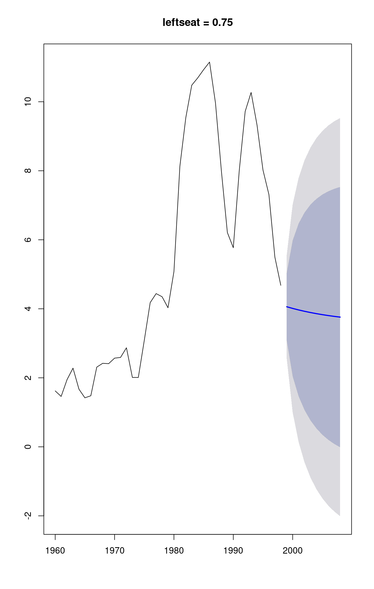
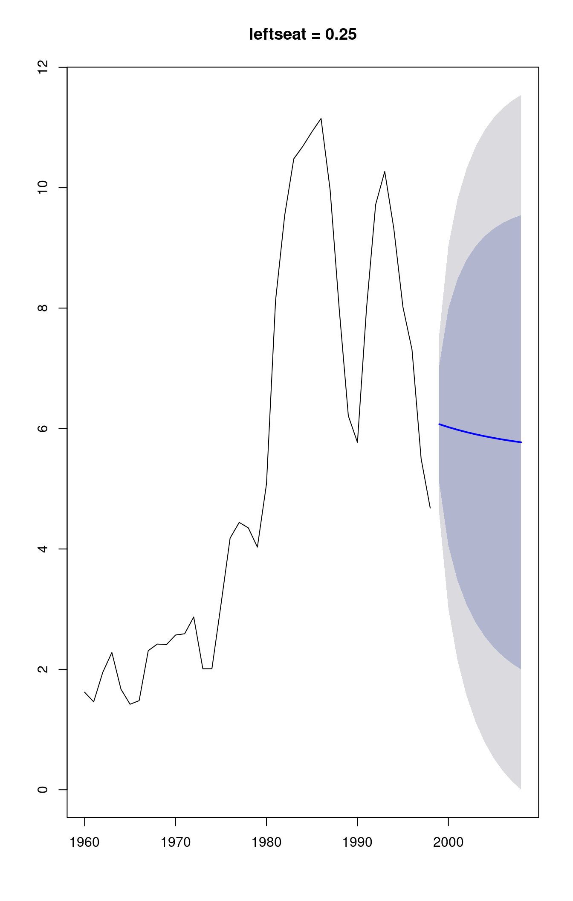
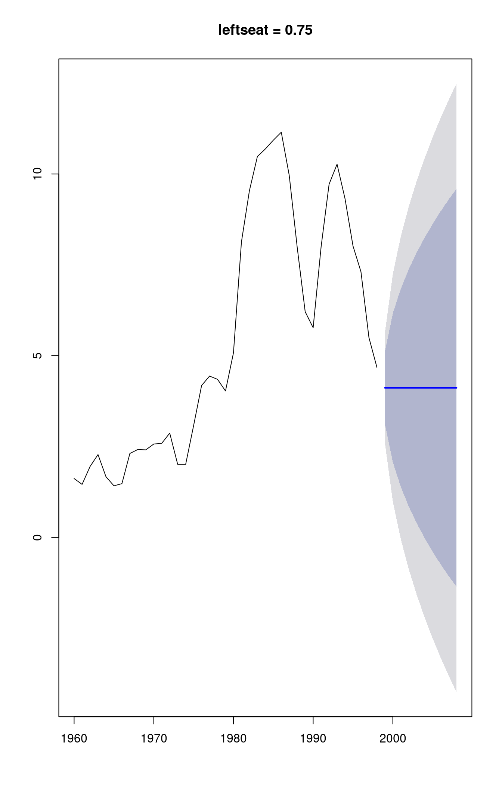
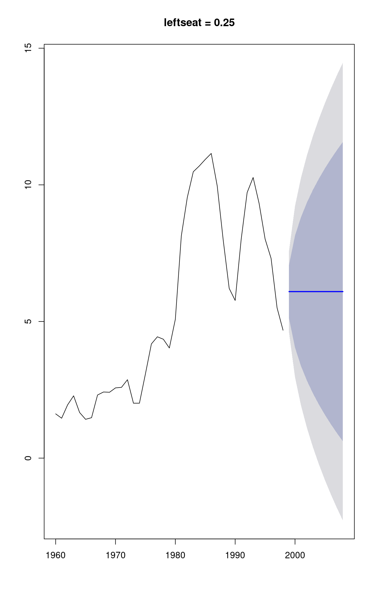

Built using Zelig version 5.1.4
++++ All Zelig time series models will be deprecated on 1 February 2018 ++++
Autoregressive and Moving-Average Models with Integration for Time-Series Data
Attach sample data, which has left party seat share and unemployment across time in several countries. We will subset to just those observations from the United Kingdom:
library(forecast)
data(seatshare)
subset <- seatshare[seatshare$country == "UNITED KINGDOM",]Estimate model:
ts.out <- zarima$new()
ts.out$zelig(unemp ~ leftseat, order = c(1, 0, 1), data = subset)
subset$unemp <- with(subset, ts(unemp, start = min(year), end = max(year)))
tsm <- with(subset, Arima(unemp, xreg = leftseat, order = c(1, 0, 1)))Summarize estimated model parameters:
summary(tsm)## Series: unemp
## Regression with ARIMA(1,0,1) errors
##
## Coefficients:
## ar1 ma1 intercept leftseat
## 0.9028 0.8365 6.5782 -4.0245
## s.e. 0.0606 0.0986 1.9840 1.6622
##
## sigma^2 estimated as 0.5872: log likelihood=-44.85
## AIC=99.71 AICc=101.53 BIC=108.03Next we simulate what happens when leftseat share drops from a moderately high level of 75 percent, to a rather low level of 25 percent:
tsm.ls75 <- forecast(tsm, xreg = rep(0.75, 10))
tsm.ls25 <- forecast(tsm, xreg = rep(0.25, 10))
plot(tsm.ls75, main = "leftseat = 0.75")
plot(tsm.ls25, main = "leftseat = 0.25")
AR (Autoregressive) and MA (Moving Average) models are commonly used in time series analysis. As both AR and MA models are special cases of ARIMA models they are not implemented as separate models within Zelig. Specification of AR and MA models can be accomplished by changing the value of the order parameter within the ARIMA model.
tsm2 <- with(subset, Arima(unemp, xreg = leftseat, order = c(1, 0, 0)))
summary(tsm2)tsm3 <- with(subset, Arima(unemp, xreg = leftseat, order = c(0, 0, 1)))The forecast package can help you choose an auto-regressive structure.
tsm4 <- with(subset, auto.arima(unemp, xreg = leftseat))
tsm4.ls75 <- forecast(tsm4, xreg = rep(0.75, 10))
tsm4.ls25 <- forecast(tsm4, xreg = rep(0.25, 10))
plot(tsm4.ls75, main = "leftseat = 0.75")
plot(tsm4.ls25, main = "leftseat = 0.25")
The dataset contains similar series for 11 different OECD countries, and we could run the same model on each country’s data. Here we need to specify the ts and cs arguments to identify the names of variables that give the time and cross-section of each observation in the dataset
library(purrr)##
## Attaching package: 'purrr'## The following object is masked from 'package:Zelig':
##
## reduceseatshare <- split(seatshare, seatshare$country)
seatshare <- map(seatshare, ~ transform(., unemp = ts(unemp, start = min(year), end = max(year))))
tsm.all <- map(seatshare, ~ with(., Arima(unemp, xreg = leftseat, order = c(0, 0, 1))))
map(tsm.all, summary)## $AUSTRALIA
## Series: unemp
## Regression with ARIMA(0,0,1) errors
##
## Coefficients:
## ma1 intercept leftseat
## 0.8845 4.342 4.3000
## s.e. 0.0792 1.553 3.2415
##
## sigma^2 estimated as 2.92: log likelihood=-61.74
## AIC=131.47 AICc=132.96 BIC=137.34
##
## $AUSTRIA
## Series: unemp
## Regression with ARIMA(0,0,1) errors
##
## Coefficients:
## ma1 intercept leftseat
## 0.8344 19.6087 -33.5615
## s.e. 0.0866 3.3434 7.1005
##
## sigma^2 estimated as 0.6703: log likelihood=-46.57
## AIC=101.15 AICc=102.32 BIC=107.8
##
## $CANADA
## Series: unemp
## Regression with ARIMA(0,0,1) errors
##
## Coefficients:
## ma1 intercept leftseat
## 1.0000 9.0824 -2.7129
## s.e. 0.0786 1.1556 2.0919
##
## sigma^2 estimated as 1.691: log likelihood=-65.86
## AIC=139.72 AICc=140.9 BIC=146.38
##
## $FINLAND
## Series: unemp
## Regression with ARIMA(0,0,1) errors
##
## Coefficients:
## ma1 intercept leftseat
## 0.8260 14.8002 -11.6683
## s.e. 0.0699 13.9348 17.2170
##
## sigma^2 estimated as 7.465: log likelihood=-93.55
## AIC=195.1 AICc=196.28 BIC=201.76
##
## $FRANCE
## Series: unemp
## Regression with ARIMA(0,0,1) errors
##
## Coefficients:
## ma1 intercept leftseat
## 1.000 6.308 1.5203
## s.e. 0.071 0.993 2.0478
##
## sigma^2 estimated as 4.199: log likelihood=-74.99
## AIC=157.99 AICc=159.32 BIC=164.21
##
## $ITALY
## Series: unemp
## Regression with ARIMA(0,0,1) errors
##
## Coefficients:
## ma1 intercept leftseat
## 1.0000 13.8927 -13.2540
## s.e. 0.3031 2.9755 6.9032
##
## sigma^2 estimated as 2.091: log likelihood=-70.01
## AIC=148.02 AICc=149.2 BIC=154.68
##
## $NORWAY
## Series: unemp
## Regression with ARIMA(0,0,1) errors
##
## Coefficients:
## ma1 intercept leftseat
## 0.8763 10.0796 -14.2477
## s.e. 0.0903 6.1042 12.5582
##
## sigma^2 estimated as 0.8567: log likelihood=-35.36
## AIC=78.73 AICc=80.54 BIC=83.91
##
## $SPAIN
## Series: unemp
## Regression with ARIMA(0,0,1) errors
##
## Coefficients:
## ma1 intercept leftseat
## 1.0000 2.4681 29.4049
## s.e. 0.1574 5.4379 10.6881
##
## sigma^2 estimated as 6.759: log likelihood=-52.19
## AIC=112.38 AICc=114.74 BIC=116.75
##
## $SWEDEN
## Series: unemp
## Regression with ARIMA(0,0,1) errors
##
## Coefficients:
## ma1 intercept leftseat
## 1.0000 13.5755 -16.6794
## s.e. 0.0788 2.6326 4.1712
##
## sigma^2 estimated as 1.019: log likelihood=-53.1
## AIC=114.2 AICc=115.45 BIC=120.64
##
## $`UNITED KINGDOM`
## Series: unemp
## Regression with ARIMA(0,0,1) errors
##
## Coefficients:
## ma1 intercept leftseat
## 1.0000 10.5870 -11.4906
## s.e. 0.0659 1.8956 3.9911
##
## sigma^2 estimated as 2.643: log likelihood=-74.58
## AIC=157.16 AICc=158.33 BIC=163.81
##
## $`UNITED STATES`
## Series: unemp
## Regression with ARIMA(0,0,1) errors
##
## Coefficients:
## ma1 intercept leftseat
## 0.8362 4.2744 3.0645
## s.e. 0.0920 2.7464 4.5750
##
## sigma^2 estimated as 1.013: log likelihood=-50.36
## AIC=108.71 AICc=110 BIC=115.05